| welding | welding models |
| additive manufacturing | additive manufacturing models |
| hybrid phase field | hybrid phase-field Potts model |
| temperature growth | temperature-dependent grain growth |
| hafnium dioxide | hafnium dioxide surface growth |
| abnormal | abnormal grain growth |
| erbium hydrides | diffusion in Erbium hydrides |
| thin film growth | thin film growth |
| nanoporous metals | diffusion in nanoporous metals |
| nuclear fuel sintering | microstructural evolution due to sintering in a nuclear fuel |
| nuclear fuel gas transport | fission gas transport in a nuclear fuel |
Pictures on this page are shown in small size. Click on the image to view a larger version.
For movies on this page, click on the small image to trigger the animation.
This is work by John Mitchell, Theron Rodgers, Jon Madison, and Veena Tikare (Sandia) on models of the welding process to join two metal pieces together. An arc welding spot passes over the surface, melting material in both pieces. The recrystallization process and resulting microstructure creates the join. Since grain growth is a strong function of temperature, the moving 3d temperature profile induces interesting patterns of grain growth.
The first image is the cover image for one of the articles referenced below. The next two images show the top surface of the weld as the arc spot passes over it. The second is a link to a movie. The next two images compare simulation microstructures to experimental weld micrographs at the top and bottom (root) surfaces of the weld. The next image shows results from a simulation where the arc spot size/intensity is pulsed in time; the next image is views of the top/bottom surfaces of the welded pieces. The last two images are a snapshot and movie of how a heat source with particular shape can alter the microstructure of a material which has already been annealed to an initial microstructure.
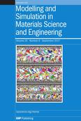 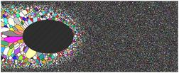 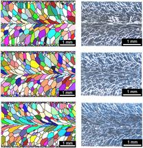 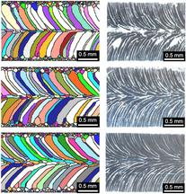 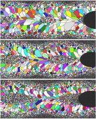 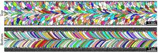 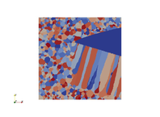These papers describes the models in more detail:
A Monte Carlo model for 3D grain evolution during welding, T. M. Rodgers, J. A. Mitchell, and V. Tikare, Modelling and Simulation in Materials Science and Engineering, 25, 064006 (2017), (abstract)
Predicting Mesoscale Microstructural Evolution in Electron Beam Welding, T. M. Rodgers, J. D. Madison, V. Tikare, and M. C. Maguire, of the Minerals, Metals & Materials Society (JOM), 68, 1419-1426 (2016). (abstract)
This is work by Theron Rodgers, Jon Madison, and Veena Tikare (Sandia) on models of the additive manufacturing (AM) process for laser melting and crystallization of metal powders.
The first image is a diagram of the AM process with both experimental and simulation results for microstructure side-by-side. The next two images show a metal cube of microstructured metal, deposited and annealed one layer at a time. The second is a link to a movie of the process. The next two images are the same process for a cylindrical shell geometry, with a thermal diffusion effect added to the model. Again the second image is a link to a movie.
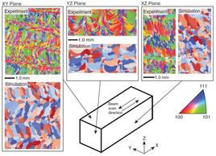 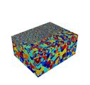 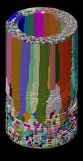These papers describes the work in more detail:
Simulation of metal additive manufacturing microstructures using kinetic Monte Carlo, T. M. Rodgers, J. D. Madison, V. Tikare, Computational Materials Science 135, 78–89 (2017). (abstract)
Process-Structure Linkages Using a Data Science Approach: Application to Simulated Additive Manufacturing Data, E. Popova, T. M. Rodgers, X. Gong, A, Cecen, J. D. Madison, and S. R. Kalidindi, Integrating Matererials and Manufacturing Innovation, 6, 54–68 (2017). (abstract)
Modeling of additive manufacturing processes for metals: Challenges and opportunities, M. M. Francois, A. Sun, W. E. King, N. J. Henson, D. Tourret, C. A. Bronkhorst, N. N. Carlson, C. K. Newman, T. Haut, J. Bakosi, J. W. Gibbs, V. Livescu, S. A. Vander Wiel, A. J. Clarke, M. W. Schraad, T. Blacker, H. Lim, T. Rodgers, S. Owen, F. Abdeljawad, J. Madison, A. T. Anderson, J-L. Fattebert, R. M. Ferencz, N. E. Hodge, S. A. Khairallah, and O. Walton, Current Opinion in Solid State and Materials Science, 21, 198–206 (2017). (abstract)
This is work by Jon Madison and Veena Tikare (Sandia) and Liz Holm (CMU) on modeling dynamic recrystallization with application to nuclear fuels. The recyrstallization model allow for three distinct processes: damage accumulation, nucleation and growth of damage- free regions, and subsequent evolution of recrystallized grains.
The two images below show a series of simulation times steps for (at top or left) a population of grains colored by an idealized "spin" value and (at bottom or right) the stored energy present at various locations throughout the microstructure. Using a hybridized kinetic Monte Carlo and cellular automata approach, stored energy in the system is increased according to some incoming flux resulting in recrystallization events once that stored energy reaches a previously determined threshold value on a grain by grain basis. Simultaneously, curvature driven grain growth ensues before, during and following recrystallization providing for dyanimc recrystallization events throughout the microstructure spatially and temporally.
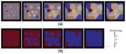 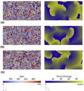This paper describes the model in more detail:
A Hybrid Simulation Methodology for Modeling Dynamic Recrystallization in U02 LWR Nuclear Fuels, J.D. Madison, V. Tikare, E.A. Holm, Journal of Nuclear Materials, 425, 173-180 (2012). (abstract)
This is work by Eric Homer (BYU, eric.homer at byu.edu) and Veena Tikare (Sandia, vtikare at sandia.gov) and Liz Holm (CMU) on a hybrid model that uses both a Cahn-Hilliard phase-field model and Monte Carlo Potts model. It can be used to efficiently simulate grain growth in a two-phase system controlled by diffusion. It is implemented in SPPARKS via the app_style potts/pfm command.
The left image shows snapshots of the grain structure, phase structure, and composition at various times for a two-component, two-phase system. The right iamge shows the same for nucleation and phase transformations in the two-component, two-phase system.
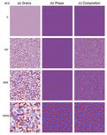 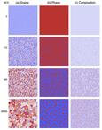This paper describes the model in detail:
Hybrid Potts-phase field model for coupled microstructural-compositional evolution, E. R. Homer, V. Tikare, E. A. Holm, Computaional Materials Science, 69, 414-423 (2013). (abstract)
This is work by Veena Tikare (vtikare at sandia.gov), John Mitchell (jamitch at sandia.gov) both at Sandia, and Justin Roberts (jrober at sandia.gov) at Brigham Young University to simulate normal, curvature-driven grain growth with variation in grain boundary mobility due to a temperature gradient. This is a modified Potts model of grain growth which includes the local mobility of grain boundaries based on the local temperature. These images and movies show grain growth with a linear grain boundary mobility gradient applied in the X-direction. The mobility is high at the left and low at the right.

Image, 1 Mb AVI movie, 3 Mb OGV movie
This paper describes the model and results of similar simulations:
Three-Dimensional Simulation of Grain Growth of in a Thermal Gradient with Non-Uniform Grain Boundary Mobility, A. L. Garcia, V. Tikare and E. A. Holm, Scripta Materialia 59, 661-664 (2008). (abstract)
This is work by Mahdi Shirazi (mahdi.shirazi at tyndall.ie) and Simon Elliott (simon.elliott at tyndall.ie) at the Tyndall National Institute in Cork, Ireland. Movie editing was by Kevin Berwick(kevin.berwick at dit.ie) of the Dublin Institute of Technology. The movie shows the the growth of Hafnium dioxide by Atomic Layer Deposition (ALD). Hafnium dioxide is used in microelectronics as a high-k dielectric in modern transistors.
In this study, activation energies, which affect the growth rate and the time evolution of the film, have been obtained by ab initio calculations using Density Functional Theory (DFT). Multiple proton diffusion, steric effects, structural relaxation and cooperative effects are included for the first time in an ALD growth simulation, using SPPARKS. The movie shows 40 growth cycles, simulated on the Stokes supercomputer at the Irish Centre for High-End Computing.
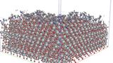Image and a 36 Mb MPG movie
This paper describes the DFT methodology used to calculate kMC input parameters:
Multiple Proton Diffusion and Film Densification in Atomic Layer Deposition Modeled by Density Functional Theory, M. Shirazi and S. D. Elliott, Chemistry of Materials, 25, 878-889 (2013). (abstract)
This is work by Liz Holm (eaholm at sandia.gov) at Sandia and Todd Hoffmann (todd.hoffmann at asu.edu) and his advisor at Carnegie Mellon, to study the mechanisms and statistics associated with abnormal grain growth. In grain growth, when the system is annealed, grain boundaries will move and rearrange so as to increase the average grain size and decrease the grain boundary area per unit volume. In normal grain growth, this occurs relatively uniformly, but in abnormal grain growth, one grain grows at the expense of the others. Abnormal grain growth can have many causes. Here the effects of static particle dispersions on grain growth are studied. Particles should pin grain boundaries in positions that maximize their contact with the particles, so that grain growth cannot proceed. However, occasionally one grain breaks free and is able to grow at the expense of others, leading to abnormal growth.
The on-lattice SPPARKS application (app_style potts/pin) that runs this model implements a Potts model of grain growth and also allows for inert pinning particles. The pinning particles can be inserted preferentially at grain boundaries or throughtout the system. Several hundred independent runs were made on 300x300x300 lattices, each of at least a million Monte Carlo steps (sweep over all lattice sites) at finite simulation temperature, to acquire enough data for statistical analysis.
The images and movies show typical results for systems with 5 volume percent pinning particles, inserted when the average grain radius was 10 sites. In the normal case, the system becomes fully pinned. In the second case, abnormal growth eventually occurs.


Two images and two 1.5 Mb AVI movies
This is work by Corbett Battaile (ccbatta at sandia.gov) and Steve Plimpton at Sandia, to model the mobility of gaseous species such as tritium and helium in metal hydrides, like erbium. Such hydrides are commonly used for neutron generation in many applications in industry, medicine, and national security, including petroleum exploration, explosives detection, toxic waste analysis, and boron neutron capture therapy. As tritium decays into helium, the helium gas clusters to form bubbles, often found to be preferentially oriented along {111} planes in the erbium lattice.
The on-lattice SPPARKS application (app_style erbium) that runs this model uses an fcc lattice with additional tetrahedral and octrahedral interstitial sites. Both the tritium and helium can diffuse through the lattice on the interstitial sites.
The image is a snapshot from a simulation on 1024 processors of a 500x500x500 unit-cell model (2 billion sites) which encodes the list of 1-, 2-, and 3-site migration mechanisms for the two mobile species. The helium (red) diffuses but is not yet aggregating due to a lack of appropriate binding and barrier energies for the various event configurations. These values (inputs to SPPARKS) are currently being calculated via density functional theory in the electronic structure code SeqQuest.

This is work by Ed Webb (ebwebb at sandia.gov), Xiaowang Zhou (xzhou at sandia.gov), and Steve Plimpton (sjplimp at sandia.gov) at Sandia, to model thin film deposition and growth. For many thin film applications, a high degree of control is desired over film properties including surface/interface roughness, film texture, grain structure, and defect content. For example, controlling void content is critical to a number of applications where voids created during deposition lead to shortened device lifetimes. Interface roughness is also important to many photovoltaic, microelectronic, and optical thin film applications when multilayered films are deposited. On-lattice KMC models can be used to study many of these effects, though they cannot capture effects like dislocation formation in the depositing crystal.
The on-lattice SPPARKS application (app_style diffusion) which ran these Ni models uses an underlying triangular lattice (2d) or fcc lattice (3d) and defines two types of events (deposition and diffusion). Nearest-neighbor and/or 2nd nearest-neighbor (Schwoebel) hops can be enabled or disabled. In these simulations, all deposition was performed at normal incidence.
The first 3 images and accompanying movies are of 2d growth under 3 conditions. The first is with no Schwoebel hops (which might be suppressed experimentally by adding impurities to the system) and results in a thin film with high porosity. The 2nd and 3rd are with Schwoebel hops at low and high temperatures (250 and 600K). In the low-temperature case there are about 3 diffusive hops per deposition event. In the high-temperature case, the ratio is 72000, resulting in a much smoother film.
The next 3 images are 3d growth (on a 2d surface), again under 3 conditions. The first two are with no Schwoebel hops at low and high temperatures (300 and 400K). The third is with Schwoebel hops at 300K. Similar effects as in the 2d case are observed, though the system is harder to visualize.
Finally, a rough surface (sinusoidal hillocks) was annealed at 500K for 10,000 seconds with a diffusion-only model in a fcc model, both with and without Schwoebel events. In both case the unstable surface asperities (top of figure) turned 45 degrees to a (111) orientation to maximize the surface stablility. However, without Schwoebel hops (middle of figure), the system lacks the ability to anneal out terraces. With Schwoebel hops (bottom of figure), terraces were all annealed out and clear (111) and (100) facets developed.
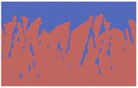 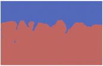 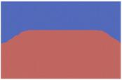 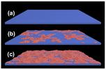
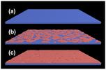
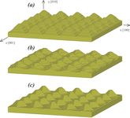
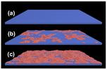
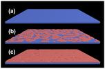
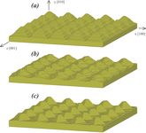
Three images and three 10 Mb QuickTime movies of 2d thin film growth. Three images of 3d film growth. One image (yellow atoms) of hillock rearrangement on a 2d surface.
This is work by Greg Wagner (gjwagne at sandia.gov) at Sandia, to model diffusion in nanoporous metals. Such materials have a range of applications based on their very large surface-to-volume ratios. At Sandida nanoporous palladium particles are being studied for use as a hydrogen storage medium, and nanoporous gold wires are being tested for use as electrodes in super-capacitors. As these complex materials age, especially at elevated temperatures, the evolution of their nanostructures with time can greatly affect material properties and performance. KMC can model this aging over long timescales.
The on-lattice SPPARKS application (app_style diffusion) that runs this model uses an fcc lattice and energies and barrier heights calcaluted from atomistic simulations using embedded atom method (EAM) potentials. Diffusion in the KMC model is described by Kawasaki dynamics, in which each event is the motion of an individual atom. A basic atom hop is defined as movement to any vacant neighboring site. Special consideration is given to Schwoebel barriers, in which an atom diffuses up or down a ledge between atomic monolayers, which is effectively a hop to a lattice location two sites away.
The images and associated movies are a bulk diffusion model with 60x60x60 unit cells (0.864 million sites) and a 50% porosity factor. If we define the length scale of the system as the inverse of the surface-to-volume ratio, then we observe the fourth power of this quantity grows linearly with time, in agreement with theory.
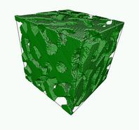 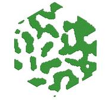Two images and two QuickTime movies (6 and 2 Mb)
This is work by Veena Tikare (vtikare at sandia.gov) at Sandia and Cristina Garcia Cardona (cgarcia at sciences.sdsu.edu) at San Diego State Univ, to simulate microstructural evolution during sintering. They augmented a Potts model of grain growth with three additional physical effects: surface diffusion, vacancy diffusion, and vacancy annihilation. The implementation of the annihilation algorithm in SPPARKS was non-trivial as an internal vacancy is annihilated by collapsing all the sites along a line from it to an external surface. In parallel this involves moving all the sites along that line towards the vacancy, requiring interprocessor communication. This sintering model is able to capture all the necessary mechanism to simulate simple solid-state sintering correctly. It was demonstrated by comparing it to 3D, in-situ images taken in a high-energy synchrotron during the sintering of Cu particles. The images below are from a simulation of the sintering process for a powder of Cu particles. The first pair of images are for an initial material density of 69%. As it compacts, an intermediate density of 79% is shown. The final pair of images are for a compacted density at the end of the simulation of 83%. Both 3d pictures of the full model and 2d slices are shown. The density versus time profiles, microstructural images and grain size distributions for this system are in good agreement with experiment.
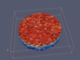 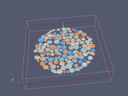 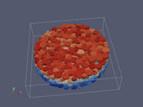 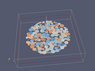 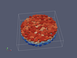 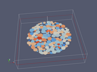This paper gives more details of the model and simulations:
Parallel Simulation of 3D Sintering, C. G. Cardona, V. Tikare, S. J. Plimpton, Int J Computational Materials Science and Surface Engineering, 4, 37-54 (2011). (abstract)
This is work by Veena Tikare (vtikare at sandia.gov) at Sandia to study fission gas bubble transport in Light Water Reactor (LWR) fuel. During operation, Xe and Kr gas atoms are produced as fission by-products. They are highly insoluble in the fuel matrix and precipitate to form two types of bubbles, small (~10 nm) intragranular bubbles and larger (~500 nm) intergranular bubbles. As the gas accumulates, it eventually finds it way to grain boundaries by diffusion and the intergranular bubbles grow, initially by gas accumulation and later by coalescence. Eventually coalescence of the intergranular bubbles progress to the point that they percolate, releasing the pressurized gas to the external surface. The bubbles sinter back and the process repeats itself. This process of percolation and gas release has important implications for fuel performance and longevity. To model these effects, a Potts model of grain growth was augmented to incorporate gas generation, gas atom diffusion, precipitation to form bubbles, and surface diffusion of the gas bubbles. This model was used to study the formation, growth and percolation of the intragranular gas bubbles in LWR fuels. Images from such a simulation are shown below; the first image shows only the gas bubbles in a two-grain microstructure with periodic boundary conditions. The inter- and intra-granular bubbles are clearly shown. The next 2 images show gas bubble growth at the planar grain boundary during the simulation. The final image shows the percolating bubble, in dark blue, at the end of the simulation.
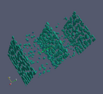 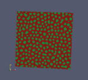 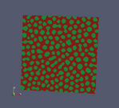 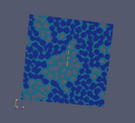